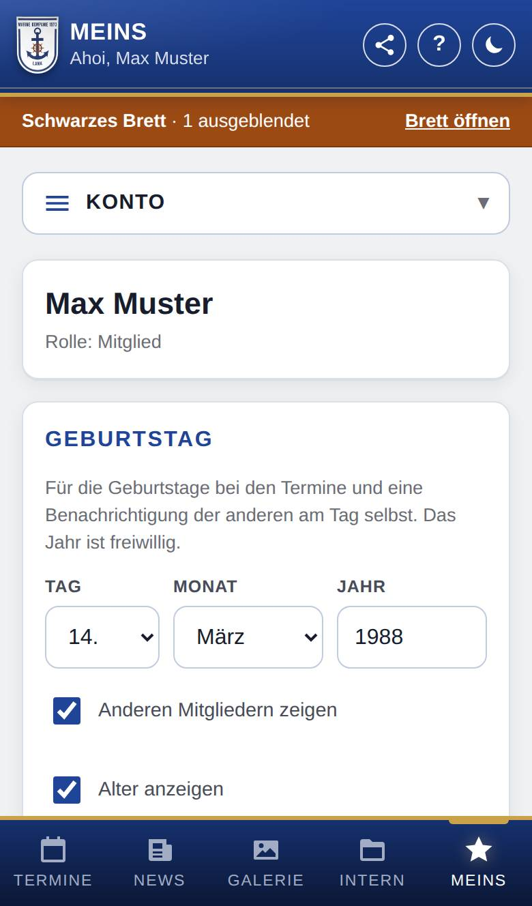
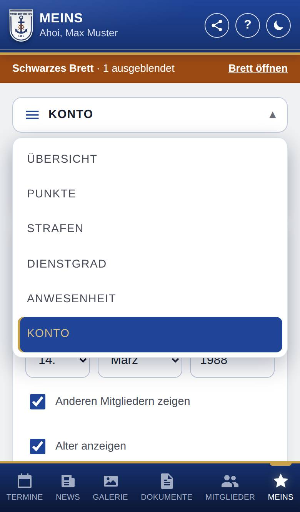
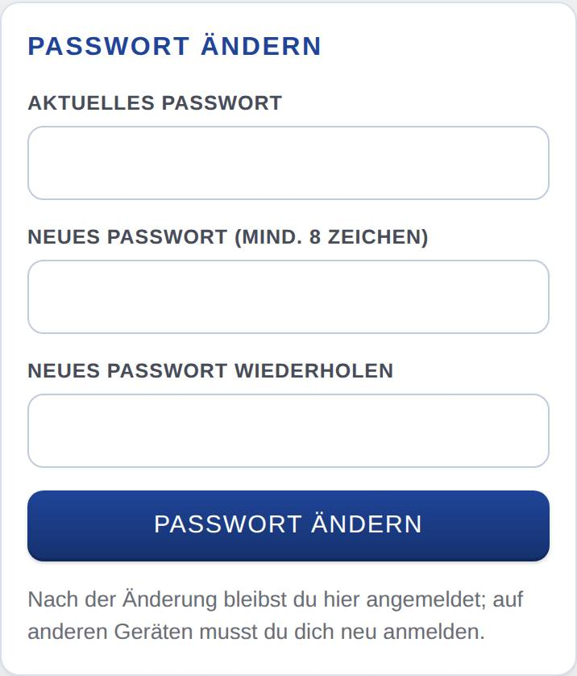

Mein Konto
In deinem Konto stehen dein Name, deine Rolle, deine E-Mail-Adresse und deine Handynummer. Hier stellst du die Benachrichtigungen und die Darstellung ein, änderst dein Passwort und meldest dich ab. Als Mitglied trägst du hier auch deinen Geburtstag und deinen Eintritt ein.

So öffnest du die Seite
Tippe unten auf Meins und wähle oben im Menü Konto. Gibt es unter Meins für dich sonst nichts (z. B. als Anwärter), öffnet sich das Konto direkt, ohne Menü.

Was du hier siehst
- Name und Rolle: dein Name und deine Rolle, z. B. Mitglied, und dein Foto, wenn jemand eines hochgeladen hat. Ändern kann das Foto, wer Mitglieder anlegen darf.
- Kontakt: deine E-Mail-Adresse und Handynummer, wie die Marinekompanie Lank sie hat.
- Geburtstag (nur für Mitglied, wenn die Marinekompanie Lank Geburtstage nutzt): dein Geburtstag und wer ihn sieht.
- Eintritt (nur für Mitglied, wenn die Marinekompanie Lank die Liste Mitglieder nutzt): wann du eingetreten bist und wer das auf deiner Seite in der Liste sieht.
- Benachrichtigungen einstellen: worüber dich die App auf diesem Gerät benachrichtigt. Darunter, wenn die Marinekompanie Lank den Mailversand eingerichtet hat, der Schalter für Nachrichten vom Brett per E-Mail (anfangs an).
- Signatur: dein Gruß für Nachrichten am Brett, mit Text und Bildern (für Mitglied, Anwärter und alle, die am Brett schreiben). Mehr dazu steht auf der Hilfeseite Signatur.
- Darstellung: Wie Gerät, Hell oder Dunkel.
- App installieren: die Anleitung, wie du die App aufs Handy holst. Die Karte fehlt, wenn du die App schon installiert geöffnet hast.
- Passwort ändern: dein Passwort neu festlegen.
- Abmelden: dich auf diesem Gerät abmelden.
So gehst du vor
E-Mail-Adresse und Handynummer ändern
- Tippe in der Karte Kontakt auf Ändern.
- Trage die neue E-Mail-Adresse bzw. Handynummer ein. Für die Handynummer wählst du links das Land (vorgegeben 🇩🇪 +49) und tippst die Nummer wie gewohnt, z. B. 0171 1234567. Ein leeres Feld entfernt die Angabe.
- Hast du die E-Mail-Adresse geändert, gib zur Bestätigung dein Aktuelles Passwort ein.
- Tippe auf Speichern.
Die App bringt beides selbst in die richtige Form: Leerzeichen in der E-Mail-Adresse fallen weg, die Handynummer wird einheitlich gespeichert, z. B. +49 171 1234567. Stimmt etwas nicht, steht es direkt unter dem Feld; bei einem vertippten Anbieter wie „gmial.com“ schlägt die App die richtige Adresse zum Antippen vor. Sehen können beides nur du und wer Mitglieder anlegen darf.
Deinen Geburtstag eintragen
- Wähle in der Karte Geburtstag Tag und Monat; das Jahr ist freiwillig.
- Lege mit Anderen Mitgliedern zeigen und Alter anzeigen fest, was die anderen sehen.
- Tippe auf Geburtstag speichern.
Alles Weitere zu den Schaltern steht auf der Hilfeseite Geburtstage.
Deinen Eintritt eintragen
- Trage in der Karte Eintritt unter Datum oder Jahr das Datum ein (z. B. 12.03.2005) oder nur das Jahr (z. B. 2005).
- Wähle unter Auf meiner Seite unter „Mitglieder“, wer es auf deiner Seite sieht: Nicht anzeigen, Mitgliedern anzeigen oder Öffentlich anzeigen (jeder mit der Adresse der App, auch ohne Anmeldung).
- Tippe auf Eintritt speichern.
Mit Entfernen löschst du den Eintritt wieder. Der Eintritt darf nicht in der Zukunft liegen.
Die Darstellung festlegen
- Tippe in der Karte Darstellung auf Hell oder Dunkel. Die App bleibt dann so, auch wenn dein Gerät umschaltet (z. B. abends in den Dunkelmodus).
- Mit Wie Gerät (so ist es am Anfang eingestellt) wechselt die App mit deinem Gerät.
Die Wahl gilt nur auf diesem Gerät und bleibt auch nach dem Abmelden erhalten. Schnell umschalten geht auch oben mit dem Mond bzw. der Sonne.
Dein Passwort ändern
- Trage in der Karte Passwort ändern dein Aktuelles Passwort ein.
- Trage das neue Passwort zweimal ein, unter Neues Passwort (mind. 8 Zeichen) und Neues Passwort wiederholen.
- Tippe auf Passwort ändern.

Das neue Passwort muss mindestens 8 Zeichen lang sein, sich vom bisherigen unterscheiden und darf nicht mit einem Leerzeichen beginnen oder enden. Du bleibst auf diesem Gerät angemeldet; auf allen anderen Geräten musst du dich neu anmelden.
Dich abmelden
- Tippe ganz unten auf Abmelden.
- Die App meldet dich ab und löscht die Daten, die sie auf dem Gerät gespeichert hat.
Gut zu wissen
- Abmelden braucht eine Internetverbindung. Ohne Netz bleibt alles, wie es ist.
- Nach dem Abmelden bekommt dein Konto auf diesem Gerät keine Benachrichtigungen mehr.
- Passwort vergessen? Ein Admin der Marinekompanie Lank (oder wer Mitglieder anlegen darf) kann dir ein neues Startpasswort geben.
- Die Einstellungen der App findest du als Admin nicht hier, sondern unter Verwaltung.